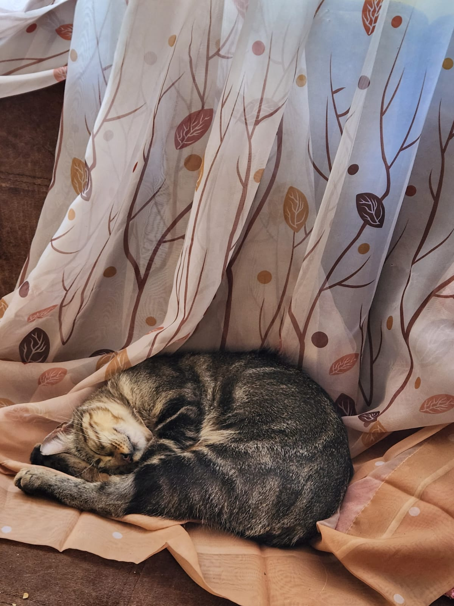
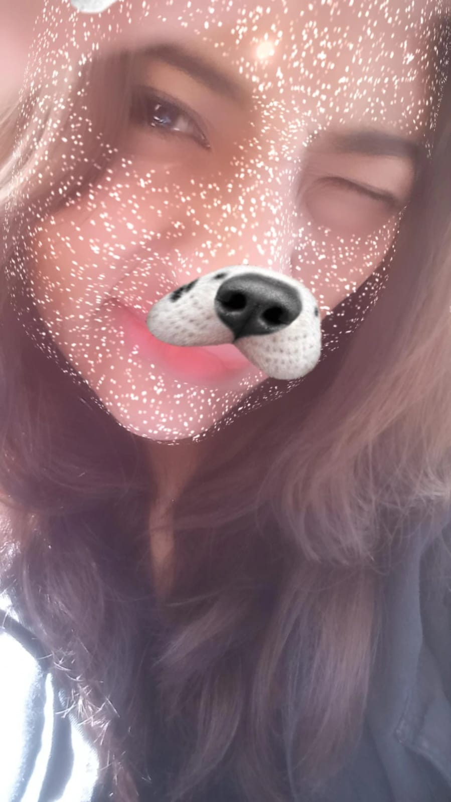
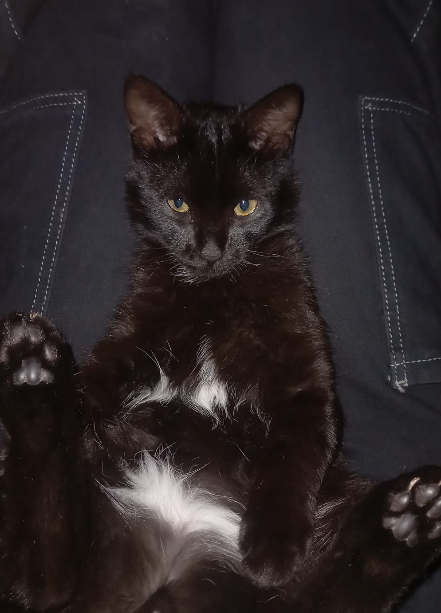

MCD
Taller de Tecnologias de Información y Comunicaciones
-Ancco Ponceca Adriana Naomy
-Garcia Cruz Liz Melisa
-Najarro Ferro Ccori Nayra
-Mavely Lineth Zaa Curi
Sobre MCD
Misión: En el equipo, nuestro objetivo es crear soluciones efectivas . Trabajamos de manera colaborativa para alcanzar metas ambiciosas, brindando apoyo mutuo y creatividad en cada paso. Visión: Ser el equipo de referencia en nuestra industria, reconocido por nuestra capacidad para resolver desafíos de manera eficiente y crear un ambiente de trabajo amigable.
Sobre Nosotras
Soy Naomy soy una persona alegre pero que le gusta la responsabilidad, tengo un hamster llamado Mussolini es de raza siria y es muy asustadizo.

Soy Melisa y soy una persona muy alegre, tengo un gato llamado Mango que le encanta dormir, come mucho y es muy travieso.


Soy Ccori y soy alguien muy divertida tengo una rata blanca llamada Kyo es hiperactiva pero para mi es autista.
 
Soy Lineth, soy alguien creativa para resolver problemas y capaz de liderar a mi equipo, cuento con la confianza para realizar trabajos y estar a la altura. Tengo un gato llamado Sharukhan, es muy inteligente y educado aunque a veces es muy travieso, le encanta dormir abrigado y que le den de comer.